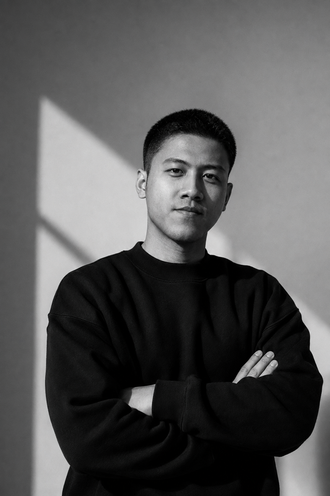

On the workbench
I ask a lot of questions, because the real problem is rarely the one in the brief. Then I sketch, wireframe, polish, and test fit with real people before anything gets glued down.
View linkedinPanel lines are the tiny grooves that make a model look finished, and nobody notices them until they’re missing. Products work the same way: a default, a label, a half-second of friction. I started in code and stayed for the people, so I design the details nobody thanks you for and everybody feels every day.
View Linkedin

I ask a lot of questions, because the real problem is rarely the one in the brief. Then I sketch, wireframe, polish, and test fit with real people before anything gets glued down.
View linkedin
I’m the one hunched over a Gundam kit every weekend, and the one wandering Jakarta with a camera while the light makes up its mind. My backlog of unbuilt kits is, let’s say, ambitious.
Visit InstagramProduct design is the core, but growth and teamwork are where the real work happens.

I start with the questions behind the brief, then turn the answers into wireframes, prototypes, and polished screens. Design systems keep it all consistent, so the next feature never starts from zero.
I care about the small decisions that shape behavior: a default, a label, a step in the flow. In onboarding, checkout, and subscriptions, those details decide whether people stay, and whether the business grows with them.
A kit only comes together when every part fits. I run sprints and design reviews, say the honest trade-off out loud, and write feedback that PMs and engineers can act on. Mentoring is a bonus, especially when there’s coffee.
Every builder has a toolbox: nippers, sandpaper, a good cutting mat. Mine has Figma, prototypes, design systems, and Notion boards, plus a habit of testing early with real people. The tools change, the habit of sanding doesn’t.
Download my resume
Happy clients, happy life. Every logo here is a kit we built together, with the care marks sanded down before launch.
The professional me: past roles, résumé, and a slightly more serious tone.
View LinkedinFor the full brief, with all the details, context, and deadlines.
Send an emailThe fast lane, for quick questions and casual hellos.
Open WhatsApp